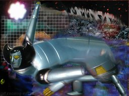
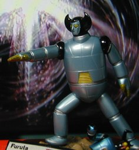

フルタ製菓 横山光輝の世界 バビル2世 ポセイドン


フルタ製菓 横山光輝の世界シリーズより、バビル二世の三つの下僕の一つ、「海系ロボット」のポセイドンです。 背景は、Winamp の MilkDrop プラグインを WinShot したもの、 MilkDrop をテレビに映した写真、フラワーロック 2.0ほか私の部屋にある小物や自分で撮った風景の写真、などを GIMP で合成して描いています。 ここ最近、精神の調子がまたおかしくなっていたように感じていたのですが、平静を保つだけの「理性」も保たせているつもりです。いつか上のような絵を描こうという構想は、ブログをはじめた2006年ごろからあったのですが、それを今描いたのは、統合失調的妄想との戦いというイメージを、上の絵で表したかったのかもしれません。 以下「妄想」も記録しておきます。 《『創世記』ひろい読み − バベルの塔》で書いたことの続きになるでしょう。 なぜロボットが海神なのでしょう？下僕はそもそもロボットでも、ポセイドンは我々がロボットという言葉に持つイメージそのものの姿をしています。 一つにはむき出しの金属であることが大事で、酸化を免れる鉄(今でいうステンレス)が共有された夢だったという側面があるかもしれません。そのような酸化させる海にいる人工金属が陸に上がってくるというのを、あからさまなロボットという形で表したのかもしれません。 でも、私はもっと別の妄想を持ちました。 「海の怒り」とは何でしょう？ 海に境界はありません。平面的に生きないのが海の掟で、境界を設けようとする生物は、「重金属」の蓄積などのデメリットを受け、端的には記憶が阻害されると想像しました。記憶を代償とするのは、《シミュレーション・アーギュメントを論駁する》で述べたような宇宙に不可欠な魔術的法則を想わせます。 しかし、陸に生きるものにとって、なわばりを境界として設けるのは普通のことです。その普通の心象を理解せず、デメリットを与ようとする「悪意」に対し、それをちょっと待てと思い留まらせるのが「海神の怒り」なのではないかと考えました。 それがバビル2世の配下にいます。つまり、それをヒトがロボットにより自動的に行おうとするのは、プログラムでランダムな観測であったことを表そうとわざわざデータの読み出しに乱数を使うようなことで、それは、世界のあり方に関して賭博するものが利益を得ることを難しくします。バビル2世はそこから利益を得れる高みにいるようにみなされる地位に追いやられるのではないかと想いました。 そういえば、アニメ版のバビル2世は途中記憶をなくなったかのように別の場所で生き、新展開を見せますね。あのそっけなさというのを病気のとき参考にしていたように記憶しています。 海で同族だけを増やすことが「重金属」を呼ぶと想ったのは、「自己を食う」ことと同等になるからです。「重金属」をうまく利用する個体がいるとき、それを進化に取り入れようとして失敗している種族が累々といます。それが、「重金属」でうまくいっている者が、有利な「重金属」をよりうまく使おうと体に貯めこむ方向に行くことを妨げてくれている…などと考えました。 念を押しますが、上は、科学的に読めそうな部分も含めすべて妄想で、私個人の現在の記録のため、もしかして同じ妄想を抱いた誰かの記念のために書いているだけです。私も普段こんなことを信じているわけではないので、どうか深刻に受けとらないで下さい。 更新：2009-11-11,2009-11-16 初公開：2009年11月16日 19:18:58 最新版：2009年11月16日 19:18:58
Trackbacks (1 件)
Trackbacks: 《ソウルキャリバー４ キャラクリ バビル２世 編》 from JRF の私見：雑記 先のポセイドンのフィギュア写真を掲載したとき、あるブログで『ソウルキャリバー４』のキャラクタークリエーション(略してキャラクリ)を使った『バビル２世』と三つのしもべの画像を見つけた。ブログ等のアヴァター作成と同じくキャラクリには当然の制限があるが、その制限を超えるために独持解釈を加えることになり、これがとても新鮮だった。 最近、『ソウルキャリバー４』がダウンロード オン デマンドで手に入るようにな... 受信： 2010-10-31 11:48:46 (JST) Comments: 移動するのが面倒だけど、着いた後は寝てるだけでいいしチョロいよな＾＾ http://rakuraku.nnstarterpp.net/4ko5wjm/ てか俺さーこのところ人気出まくりだし いつも８ 万請求だけど１４ 万に上げてみたの！！！ なのに前よりも引張りダコなんだがｗｗｗｗ 何？高級感？イミフｗｗｗｗ 投稿: 金額パネェｗｗｗｗｗｗｗ | 2009-11-17 22:58:30 (JST) instead confirmation amount reductions meteorological america reports [url=http://www.atom.com]slow wire[/url] http://www.tigerrag.com 投稿: haddongova | 2009-12-12 14:01:52 (JST) なんか おもしろい 考え方する人ですね 気にさわったら ごめん 理系的？科学者的な？アニメプログというかスゴイ ストーリー面白ければ それで 私はいいけどね でも ロデムは ターミネーター２みたいだし サイボーグなのだろうか 医学的に サイボーグは ＤＮＡとか改造人間とか 長くなる ロプロスなんだけど 獣をどう 動かしたのか 脳が大きいのか テレパシーか コンピュター指令なのか なんちゃてね 名古屋発 投稿: 村石 太205号 | 2009-12-14 22:15:19 (JST) [E:key] ロプロスも「機械の体」であることは明らかになりますし、ロデムもそうなのでしょう。そこは永い年月を経るには、そういうものを採り入れるしかないという洞察があるのでしょうか。それともバビルにとって「食べない」＝「眠りのときに世界に生物的影響を与えない」ということが大事なのでしょうか。 でも、ロデムがアンドロイドではなくサイボーグというのはなかなか興味深い捉え方ですね。私もどちらかといえばそのような印象があります。待ってくれる「女性性」をある種の「献身」と考えたいのかもしれません。そのロマンがバビルを支える一つの柱(人柱)であるべきだと。 ロプロスには、V号という「ニセモノ」が出てきますね。それは「不可能」ではない。…ということは、本当の神秘はそこにあるのかもしれませんね。復活ということが本当に可能なら複雑になりすぎるということは逆にマイナスになります。バビルが現代において2世になるということの意味は、V号のようにあることで良いのでしょうか？ もちろん、何で指令しているかも大事なところです。今の人は無線通信がありそこが保護されうるのはあたり前でしょう。でも、それ以前に本当に通信する方法はなかったのか、通信する方法があったのにそれがますますわかりにくく、「砂嵐」の向こうに追いやられただけではないか。そういう妄想は誰かが抱き続けるべきなのかもしれません。 ところで、原作の「横山光輝」氏の公式の二次創作として今ジャイアントロボ地球の燃え尽きる日 1 (チャンピオンREDコミックス): 横山 光輝, 今川 泰宏, 戸田 泰成があります。そこではバビル二世(らしき者)が今度はヨミのような役割を負っています。標題からは核を想像しますね。核とは違う何かはどうでなければならないか、宇宙に夢を追う者がかつては多かったのですが…。 コメントをきっかけとして、さらに想像を含らませてみました。こちらこそ気に障るようなことがなければよいのですが…。 なお、さらに上のサポートベクターマシン - Wikipediaに関する英語のコメントは、スパムかとも思ったのですが、絵にも文にも関連が「かなり」あるように思えたので残してあります。 コメントありがとうございました。 投稿: JRF | 2009-12-14 23:15:56 (JST) [E:paper] 更新：上のコメントで「V2 号」となっていたのを「V号」に修正。 投稿: JRF | 2010-02-01 16:58:22 (JST) Links: フルタ製菓: http://www.furuta.co.jp/ MilkDrop: http://www.milkdrop.co.uk/ WinShot: http://www.woodybells.com/winshot.html フラワーロック 2.0: http://www.takaratomy.co.jp/products/flower-rock/ GIMP: http://www.gimp.org/ 『創世記』ひろい読み − バベルの塔: http://jrf.cocolog-nifty.com/religion/2006/02/post_13.html シミュレーション・アーギュメントを論駁する: http://jrf.cocolog-nifty.com/religion/2006/10/post.html 金額パネェｗｗｗｗｗｗｗ: http://rakuraku.nnstarterpp.net/noj1iqp/ amount reductions meteorological america reports: http://svmlight.joachims.org haddongova: http://www.eecs.wsu.edu ジャイアントロボ地球の燃え尽きる日 1 (チャンピオンREDコミックス): 横山 光輝, 今川 泰宏, 戸田 泰成: http://www.amazon.co.jp/dp/4253232310 サポートベクターマシン - Wikipedia: http://ja.wikipedia.org/wiki/%E3%82%B5%E3%83%9D%E3%83%BC%E3%83%88%E3%83%99%E3%82%AF%E3%82%BF%E3%83%BC%E3%83%9E%E3%82%B7%E3%83%B3